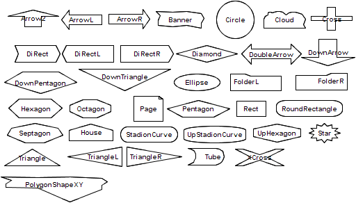

The concept of a graphical type enables the specification of an external graphical presentation for ConceptBase objects. The graphical type is declared using a special pre-defined attribute category. An application program then uses this information to determine the graphical presentation of an object.
The next subsection introduces the basic concepts behind graphical types, while section C.2 presents the standard graphical type definitions for the ConceptBase Graph Editor. Section C.3 describes the definition of application-specific types.
A specific graphical type is defined as an instance of the object GraphicalType. CBGraph uses the subclass JavaGraphicalType. Instances of this class specify a graphical represenation of an object by defining graphical attributes such as shape, color, line thickness, font etc. Since the actual attributes and their admissible value depend on the used visualization tool, the definition of GraphicalType looks very simple.
GraphicalType in Class
end
The declaration of a graphical type for a concrete object is done by using the attribute graphtype which is defined for Proposition and therefore available for all objects:
Proposition with
attribute
graphtype : GraphicalType
end
The attribute can be defined explicitely for an object or can be specified by using a deductive rule (see section C.2 for an example). One can attach a priority value to each graphical type. If there multiple graphtype attributes defined for one object, the graphical type with the highest priority value will be used by CBGraph.
Many modeling applications require multiple notations to provide different perspectives on the same set of objects. Each perspective emphasizes a specific aspect of the world, such as the data-oriented, the process-oriented and the behavior-oriented viewpoint, and uses an aspect-specific notation. A graphical notation (as e.g. the Entity-Relationship diagram) typically consists of a set of different graphical symbols (as e.g. diamonds, rectangles, and lines). A graphical palette is used to combine the set of graphical types that together form a notation:
Individual GraphicalPalette in Class with
attribute
contains : GraphicalType;
default : GraphicalType
end
In such a setting the same object may participate in different perspectives. ConceptBase offers the possibility to specify multiple graphical types for the same object. A tool can then provide different graphical views on the same object. To get the desired graphical type of an object under a specific palette, an application program specifies the name of the actual graphical palette as answer format when querying the ConceptBase server. Although this mechanism is available for arbitrary application programs we restrict our description to the CBGraph Editor.
The default specification serves as a catch all: an answer object, for which none of the graphical types of the current palette is specified, is presented using the default graphical type of that palette.
CBGraph is implemented using the Java Programming Language. It is entirely based on the Swing toolkit (package javax.swing). The graphical objects shown in CBGraph are all instances of the class JComponent in the javax.swing package. User-defined representations of objects can be provided by overwriting a specific class of CBGraph (details are given below).
Based on our experience with a legacy graph browser for X11, we have extended the graphical type model for the CBGraph Editor. First, the class GraphicalType has been specialized by a class JavaGraphicalType:
Class JavaGraphicalType isA GraphicalType with
attribute
implementedBy : String;
property : String;
priority : Integer
attribute,rule
rPriority : $ forall jgt/JavaGraphicalType (not (exists i/Integer
A_e(jgt,priority,i))) ==> A(jgt,priority,0) $
end
Individual DefaultIndividualGT in JavaGraphicalType with
attribute,property
bgcolor : "210,210,210";
textcolor : "0,0,0";
linecolor : "0,0,0";
shape : "i5.cb.graph.shapes.Rect"
attribute,implementedBy
implBy : "i5.cb.graph.cbeditor.CBIndividual"
end
The object DefaultIndividualGT is an example for the instantiation
of a graphical type.
The attribute implementedBy specifies the full name of the Java class
that provides the implementation for this graphical type. This class
has to be a sub class of "i5.cb.graph.cbeditor.CBUserObject".
The property attribute specifies name-value pairs which will
be used by the Java implementation to set certain properties, e.g.
color, shape, font1.
The priority value is used to resolve ambiguity
if multiple graphical types apply to one object. The graphical type
with the highest priority will be used. The rule specifies a default
value of 0 for the priority.
The graphical palette has also been extended. There are now defaults for different types of objects, and graphical types for implicit links can be defined. Thus, the default attribute defined in GraphicalPalette will not be used anymore. The contains attribute has still to be used, i.e. a graphical type will only be used if it is also contained in the current graphical palette. Although the attributes are not declared as single and necessary, each graphical palette should have exactly one value for the each of the default and implicit attributes.
Class JavaGraphicalPalette isA GraphicalPalette with
attribute
defaultIndividual : JavaGraphicalType;
defaultLink : JavaGraphicalType;
implicitIsA : JavaGraphicalType;
implicitInstanceOf : JavaGraphicalType;
implicitAttribute : JavaGraphicalType;
palproperty : String
end
The attribute palproperty is used for declaring any number of properties of a palette. The properties are passed to the CBGraph Editor when it loads the palette at startup time. CBGraph supports the following properties for palettes:
The purpose of the background image is to highlight regions of a graph, e.g. regions for instances, classes, and meta classes. Another typical use is to support canvasses like the business model canvas link used in the Telos models described in the CB-Forum at link.
If a background image is specified for a palette shown in an internal window of CBGraph, then CBGraph links it with the size and zoom factor of the internal window. Initially, the zoom factor is set to 100% and the internal window size is set to display the image in its original resulution, provided that it fits well to the screen size. You can then resize the internal window and the background image shall be resized accordingly. Analogously, the image is resized when the zoom factor changes. The background image is also stored in the GEL file, see section 8.2.3.
For the standard objects, there are a number of predefined graphical types. There are contained in the graphical palette DefaultJavaPalette which is used by default by the CBGraph Editor.
| type of object | graphical type | style |
| Individuals | DefaultIndividualGT | gray box |
| Links | DefaultLinkGT | thin black line with label |
| InstanceOf | DefaultInstanceOfGT | green line without label |
| IsA | DefaultIsAGT | blue line without label; white edge heads |
| Attribute | DefaultAttributeGT | black line with label |
| Class | ClassGT | turquoise box |
| SimpleClass | SimpleClassGT | pink oval |
| MetaClass | MetaClassGT | light blue oval |
| MetametaClass | MetametaGT | bright green oval |
| QueryClass | QueryClassGT | red oval |
| Implicit In | ImplicitInstanceOfGT | dashed green line |
| Implicit IsA | ImplicitIsAGT | dashed blue line; white edge heads |
| Implicit Attribute | ImplicitAttributeGT | dashed black line |
The object DefaultJavaPalette has also some rules which define the default relationship between objects and graphical types, e.g. all instances of Class have the graphical type ClassGT.
If you want to customize the graphical types for your model, then you must define the new graphical types (see below) and then add them to a new graphical palette as instance of JavaGraphicalPalette. Take the default graphical palette as a starting point since you may want to reuse some of the existing graphical types. See file 03-ERD-GTs.sml at link for an example.
The safest way to define a correct graphical palette is to use the intermediate XPalette as superclass of the new palette. It can be found within the CB-Forum model for business model canvasses at link. With XPalette you can define a new palette without having to worry about values for required default graphical types.
BMG_Palette in JavaGraphicalPalette isA XPalette with
palproperty
bgimage: "http://conceptbase.sourceforge.net/CBICONS/bgimages/bmgcolor.png";
longtitle: "Business Model"
contains
bmg1: Customer_GT;
bmg2: Revenue_GT;
bmg3: CustomerRelationship_GT;
bmg4: Channel_GT;
...
end
To support the user in defining his own graphical types we provide some examples and documentation of the properties.
There are two ways to customize the graphical types:
Both possibilities will presented in the next two subsections.
The easiest way to modify the representation of an object in the CBGraph Editor is to load an existing graphical type, modify its properties and store it as a new graphical type.
The properties available and there meaning are given in the following. Note that colors have to be given as RGB color value, e.g. "0,0,0" is black, "255,0,0" is red, "255,255,255" is white, etc. Furthermore, all attributes have to be strings, even if they are just numbers, e.g. use "1" instead of 1 as attribute value.
Edges with empty label (anonymous edge) are displayed with a square dot in the middle of the edge. The color of the square dot is by default the edgecolor and its size is set to 6 pixels. If the graphical type of an anonymous edge has bgcolor defined, then the square dot is adjusted to the edgewidth and displayed in bgcolor. If you set an explicit bgcolor for an edge, then the bounding box around the edge label shall be painted in that color. If you choose as bgcolor the same value as for the bgcolor of the palette, then edge labels appear more readable.
Do not forget to include the new graphical type into the graphical palette. It is not necessary to define a new graphical palette, you can extend the default palette. Furthermore, you have to define the graphtype attribute of some object in such a way that it refers to the new graphical type. Make sure, that the new graphical type has a higher priority than other graphical type which might apply (10 is the highest priority of the default graphical types).
The color strings in bgcolor, textcolor, linecolor, and edgecolor are encoded in the format "r,g,b", where r, b and g represent the red, green, and blue share of the color. All values must be from 0 to 255. The color string "0,0,0" results in black and "255,255,255" results in white. You can also add a so-called alpha value for the transparency of the color as fourth component of a color string. The value "255" stands for opaque (not transparent) colors. This is also the default. The smallest value "0" stands for maximal transparency, i.e. the color is not visible at all. Any value in between is a relative transparency. For example, "255,0,0,127" represents a red color that is about 50% transparent with respect to objects below such as the background.
An example of user-defined graphical types can be found in D.2, see also the CB-Forum at link for a complete specification of ER diagrams including graphical types.
CBGraph paints the nodes and edges of a graph in a so-called layered pane. This helps to separate nodes from edges and from interactive elements such as pop-up menus. The default absolute level for a node is 200 and the default absolute level for an edge is 100. That means that nodes are by default painted on top of edges, i.e. the node’s shape is painted over an edge if they overlap. In some modeling languages, one may want to have certain elements always painted over some other elements. For example, the process elements of a BPMN process model should be painted on top of the pool, in which they are defined. Or consider a traffic light element that is composed of red, yellow and green lights. Then the symbol for the traffic light element should be painted below the symbol for the three part lights.
This ordering can be achieved by the nodelevel property for the graphical types. The nodelevel property is a relative increment to the default absolute node level 200. For example, by setting the node level to "-1", the resulting absolute node level shall be 199. By setting the relative node level to "-101", the resulting absolute node level would be 99, i.e. even below the level of edges.
As an example consider the traffic light scenario. The node level is set to "-1", hence it shall be painted behind the other node elements. The example is taken from the CB-Forum at link.
TrafficLight_GT in Class,JavaGraphicalType with
property
textcolor : "255,255,255";
linecolor : "0,0,0";
linewidth: "3";
bgcolor : "60,60,60";
shape : "i5.cb.graph.shapes.RoundRectangle";
size: "resizable";
align : "bottom";
nodelevel: "-1"
implementedBy
implBy : "i5.cb.graph.cbeditor.CBIndividual"
priority
pr : 22
rule
gtrule: $ forall x/TrafficLight (x graphtype TrafficLight_GT) $
end
You can also use positive node levels to explicitly specify that the nodes are painted in the foreground of other nodes. The default relative node level is "0". If nodes have the same level, then they are painted in the order in which they are added to the diagram.
The node selection in CBGraph is adapted to take the node level into account. It a node with a negative level is selected by a left mouse click, then all nodes with a higher level whose center point is contained in the bounds of the first node also get selected. Nodes with negative levels are interpreted as a kind of a container. So, selecting and moving them is simplified by this behavior. You can also disable this behavior by the configuration variable "NodeLevelAware", see section 8.4.
A click action is a property of a graphical type and contains the name of a query class as a string. A simple example is:
clickaction: "fireTransition";
If an object has a graph type with a click action, then the corresponding query class is called using the object name as single parameters. For example, if t1 is the object name, then a click on the object in CBGraph will result in calling the query fireTransition[t1]. It is assumed that the ConceptBase server includes an active rule that is triggered by the query call. Hence, such calls can result in an update to the database. CBGraph shall refresh its graph after performing the query call to show the effect of the database update to the graph. You can also specify a click action with arity zero:
clickaction: "fire/0";
In this case the name of the clicked object is not included as a parameter of the query call. A click action like "fireTransition" is equivalent to "fireTransition/1".
Click actions let a graph directly interact with the ConceptBase server. Each click on a node whose graphical type has a click action will result in a corresponding query call that triggers active rules – assuming that there are active rules matching the query call. The active rule in the CBserver can change the database state, but it can also trigger calls to external programs.
You can also specify clickactions with two arguments like in
clickaction: "playMove/2";
In such cases, CBGraph will prepend the username before the object name of the node that has been clicked. The generated query call would look like playMove[jonny,m1] Note that the query must have two arguments in this case, e.g.
GenericQueryClass playMove isA Position with
parameter
arg1: CB_User;
arg2: Move
...
end
Note that the first argument for the username must have a label (arg1) that is lexicographically ordered before the label of the second argument (arg2). The username is the same that is used by the CBGraph tool to register to the CBserver. That user is then stored as instance of the predefined class CB_User.
Another option with click actions is to limit the scope of nodes and links in the current diagram
that are refreshed after calling the click action. The click action can invoke an
active rule which changes the database state. Consequently, certain objects in the diagram
may get a new graphical type. By default, CBGraph shall refresh all nodes and links in the diagram
after executing a click action. This can be rather slow when the displayed graph is large.
The option "-n" allows to limit the refresh to the neighborhood of the selected object.
The neighborbood is defined as the set consisting of the selected object, the direct neighbors object of the
selected object, the direct neighbors of those neighbors, and all the links in between.
Note that this only refers to the objects displayed in the graph!
You can enable the "neighbor" refresh by adding the string "-n" to a click action like in
clickaction: "fireTransition -n";
The "-n" option is not guaranteed to work correctly since some objects outside the neighborhood may be affected by the click action. Hence, only use this when you know that the effect is bound to the neighborhood and when the displayed diagram has all the required links displayed to compute the neighborhood.
You can enable and disable click actions by a checkbox in the options menu of CBGraph. The setting is also stored in the configuration file .CBjavaInterface. The entry is called "ClickActions" there.
See link for examples.
If you got the sources of ConceptBase, then you can add your own implementation for graphical types. The sources are in files CBPOOL-*.zip downloadable via link. Its subdirectory AdminPOOL contains instructions on how to compile the ConceptBase system under Linux/Unix. Adapting the source code requires considerable programming skills in Java. Hence, this section is only meant for the programmers among you.
The implementedBy attribute of a graphical type specifies the class name of a Java class implementing this graphical type. This class has to be a subclass of “i5.cb.graph.cbeditor.CBUserObject”. If you are going to implement your own class, it is most useful to extend CBIndividual or CBLink in the package i5.cb.graph.cbeditor, i.e. in directory ProductPOOL/java/i5/cb/graph/cbeditor of the CBPOOL.
The class CBUserObject provides several methods which can be overwritten to implement your own graphical types:
Furthermore, the CBUserObject class provides several methods which might be useful for implementing new graphical types:
Example: The following example defines a graphical type that uses a JButton to visualize the object. Only the method getSmallComponent is overwritten. The background color of the button will be changed if the property bgcolor has been defined. The example shows that the implementation of graphical types is quite simple. Place the source code of your Java implementation of a grahical type in the subdirectory ProductPOOL/java/i5/cb/graph/cbeditor of your CBPOOL.
import i5.cb.graph.cbeditor.*;
import javax.swing.*;
import java.awt.Component;
/**
* An example for a user defined CBUserObject
*/
public class CBButton extends CBUserObject {
public Component getSmallComponent() {
JButton jButton=new JButton(this.getTelosObject().toString());
if(hasProperty("bgcolor"))
jButton.setBackground(CBUtil.stringToColor(getProperty("bgcolor")));
return jButton;
}
}
The source code of the above example is included in the cbeditor directory in file CBButton.java. So, you can indeed use "i5.cb.graph.cbeditor.CBButton" instead "i5.cb.graph.cbeditor.CBIndividual" in graphical types to see the effect.
The package i5.cb.graph.shapes contains several shapes which might
be useful for the ConceptBase CBGraph Editor. To use these shapes, you
can either specify the full path, e.g. "i5.cb.graph.shapes.Cloud",
or just the last part like "Cloud" as value
of the property shape of a graphical type.
| class name | graphical representation |
| Arrow2, ArrowL, ArrowR, DoubleArrow, DownArrow | various arrows |
| Banner | a banner |
| Circle | a circle |
| Cloud | a cloud shape |
| Cross | a cross (like the red cross) |
| Diamond | a diamond/rhombus |
| DiRect, DiRectL, DiRectR | direction signs |
| DownPentagon | like Pentagon but rotated 180 degrees |
| Ellipse | an ellipse |
| FolderL, FolderR | folder shapes |
| House | a house shape |
| Pentagon, Hexagon, Septagon, Octagon | as the name says |
| Rect | a rectangle |
| RoundRectangle | a rectangle with round corners |
| Page | a page shape |
| Star | a star |
| Triangle, TriangleL, TriangleR, DownTriangle | various triangles |
| Tube | a tube shape |
| UpHexagon | hexagon with pointed vertex on top/bottom |
| StadionCurve | variant of a round rectangle resembling a stadion curve |
| UpStadionCurve | variant of StadionCurve |
| XCross | a cross in the form of an X |
| PolygonShape | user-definable polygon |
The user-defined polygon-curve shape allows you to specify any shape consisting of a set of points. The start point must be the same as the end point. Assume, you want to triangle pointing to the right, but the right extreme point being at the same height 0 as the upper left point. Then, the following graphical type would do the job:
MyTriangle_GT in JavaGraphicalType with
property
...
shape : "PolygonShape; 0,3,0,0; 0,0,4,0"
implementedBy
implBy : "i5.cb.graph.cbeditor.CBIndividual"
priority
pr : 22
end
In the shape string, the first part "PolygonShape" indicates that it is a user-defined polygon shape, the second part "0,3,0,0" are the x-coordinates of the polygon points, and the third part "0,0,4,0" are its y-coordinates. Note that the number of x-coordinates must be the same as the number of y-coordinates and that the polygon line ends in its starting point, here (0,0). The size of the bounding rectangle in the above example is 4x5 pixels. If your shape is more complicated, e.g. a curved shape, then you should embed it into a bigger rectangle. The polygon lines may not intersect each other.

Figure C.1: Some of the standard shapes
Figure C.1 visualizes the pre-defined graph shapes. Note that by default the dimensions of a shape are adjusted from the area that the object label occupies. This is fine for the shapes that are close to a rectangle. The other shapes should be used in combination with the size "resizable".
An example for the use of resizable shapes graphical types can be found in the CB-Forum at link.
You can extend the shapes by using the parameterized graph type PologonShape as shown in the previous subsection. Use the "align" property to specify at which position the node’s label should be displayed. Default is "center". The above link also contains examples of user-defined shapes.
You can specify an image icon that is displayed instead of a shape to be drawn for the small compoment of a node (CBIndividual). The syntax for specifying an image icon is
image: "<image file location>"
You can specify either the URL of the image file or the local path of the file in the URL syntax. For example
Class AgentGT in JavaGraphicalType with
rule
gtrule : $ forall a/Agent (a graphtype AgentGT) $
property
textcolor : "0,0,0";
linecolor : "0,0,0";
image: "http://myserver.comp.eu/images/AgentIcon.png"
implementedBy
implBy : "i5.cb.graph.cbeditor.CBIndividual"
priority
pr : 20
end
associates the graphical type AgentGT to the image icon AgentIcon.png. You can also point to local files via the file protocol:
Class AgentGT in JavaGraphicalType with
rule
gtrule : $ forall a/Agent (a graphtype AgentGT) $
property
textcolor : "0,0,0";
linecolor : "0,0,0";
image: "file:///home/jonny/images/AgentIcon.png"
implementedBy
implBy : "i5.cb.graph.cbeditor.CBIndividual"
priority
pr : 20
end
Note that the image icon is looked up by CBGraph. Hence, the location must be in the file system of the computer on which CBGraph runs. If you place the image icon on a web server, then CBGraph will be able to fetch it from any computer provided that the access rights are set properly.
If you specify an image icon for a graphical type, then you can also set its textposition, for example:
...
image: "file:///home/jonny/images/AgentIcon.png";
textposition: "top";
...
By default, the node’s text label is placed at the bottom of the image. In this case it shall be placed on top of it. Other possible values are "center", "left", and "right". Note that the property textposition is only evaluated in combination with an icon image. If a graphical type has no image ocon, then any text position specified for it would be ignored. In most cases, the default value "bottom" is just fine.
You can also combine shapes with image icons. In such cases, the image icon plus the label are the "inner content" and the shape is drawn around it. In the example below, the label is placed left of the image icon. Both are aligned in the center of a circular shape with gray background and black line color. CBGraph shall compute the required size of the surrounding shape from the dimensions of the image icon and its label. An exception holds when the "size" property is set to a fixed dimension like "50x40".
...
image: "file:///home/jonny/images/AgentIcon.png";
textposition: "left";
shape : "i5.cb.graph.shapes.Circle";
align : "center";
bgcolor : "200,200,200";
linecolor : "0,0,0";
...
The location specified in the "image" and "bgimage" property can either be a URL to an image file (starting with "http://" or "file://") or a relative file location such as "diaicons/icon1.png". In the latter case, CBGraph shall first check if local directory "CBICONS" exists in the ConceptBase installation directory (environment variable CB_HOME). If that exits, it shall expand the relative path to and absolute path using the location of CB_HOME. If the local directory does not exist, CBGraph shall expand the relative path to a URL starting with "http://conceptbase.sourceforge.net/CBICONS/". You can add your own icons to the local directory CBICONS in your ConceptBase installation directory. Below is an example of a relative image location.
...
image: "images/AgentIcon.png";
...
Further examples on using image icons are provided in the CB-Forum at link.
{kind=link}